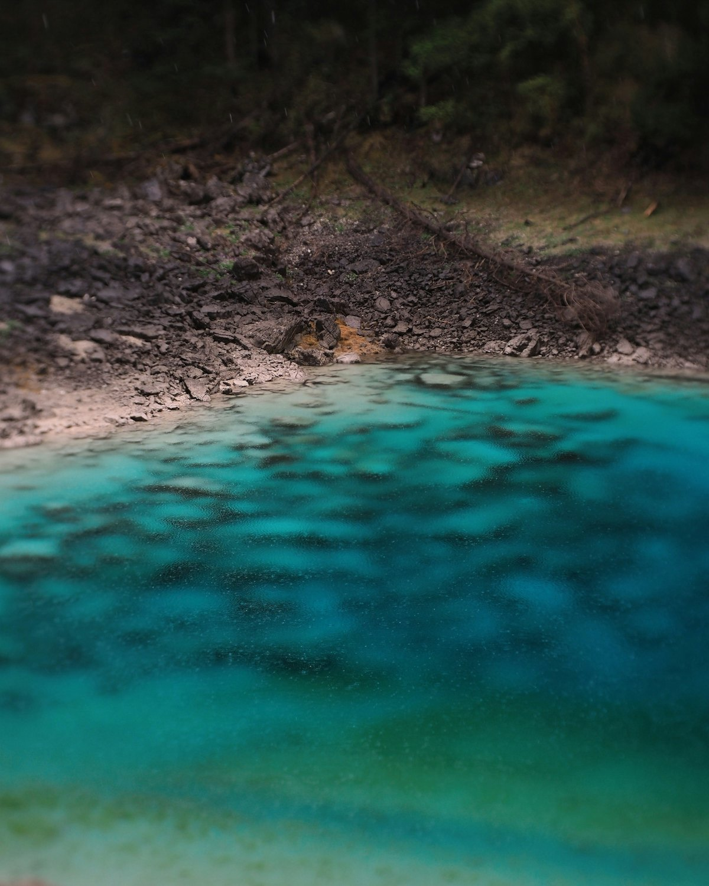
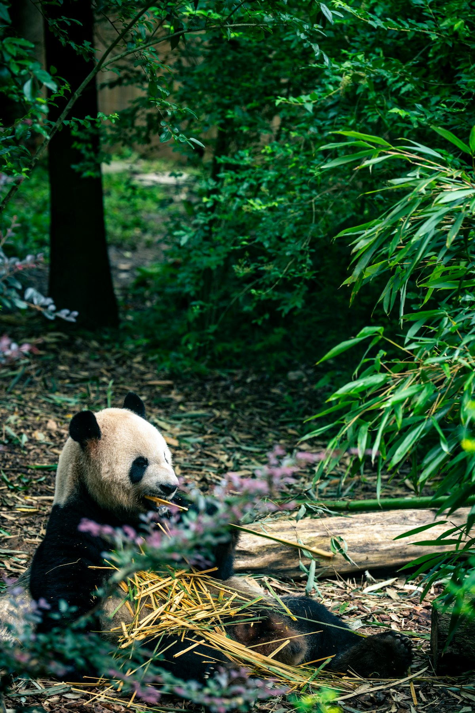
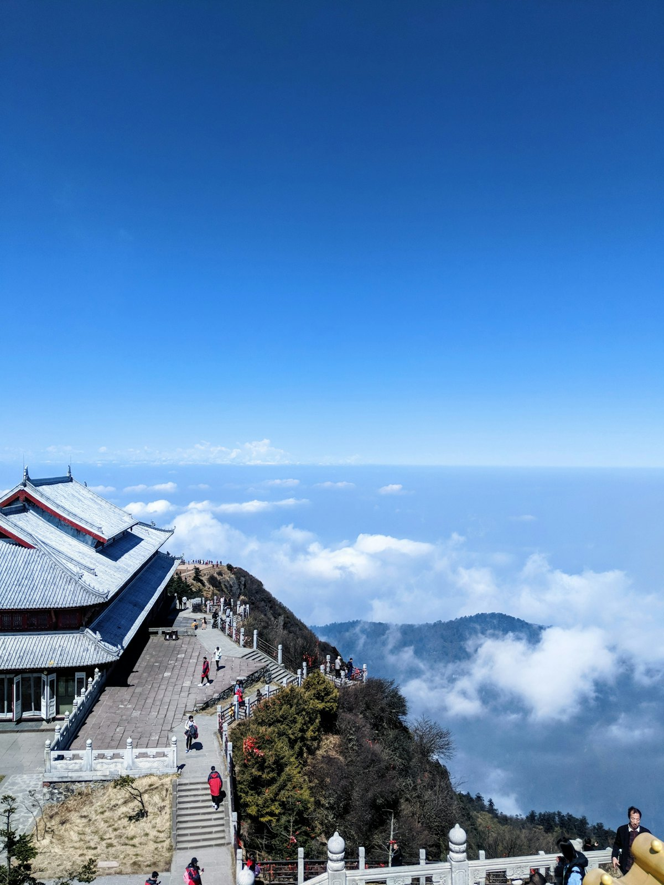
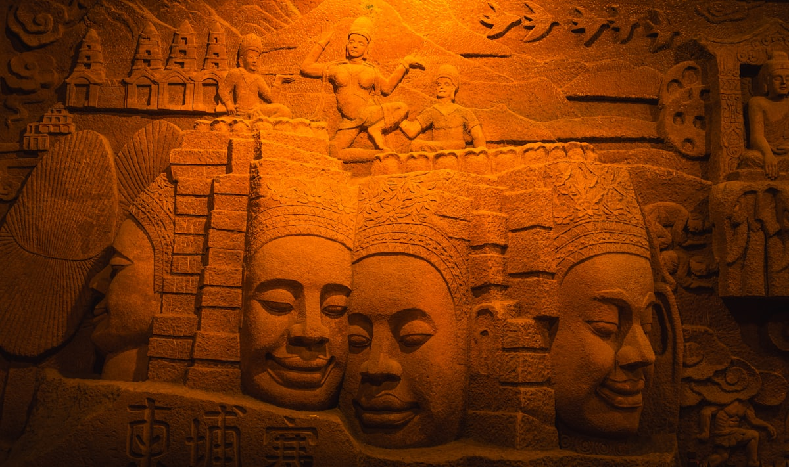
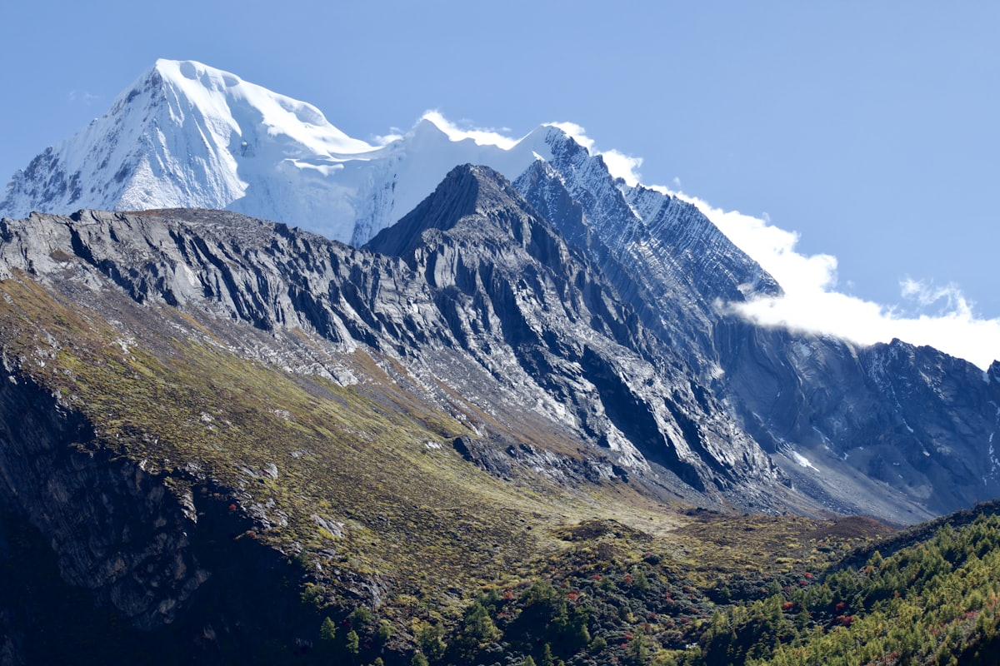
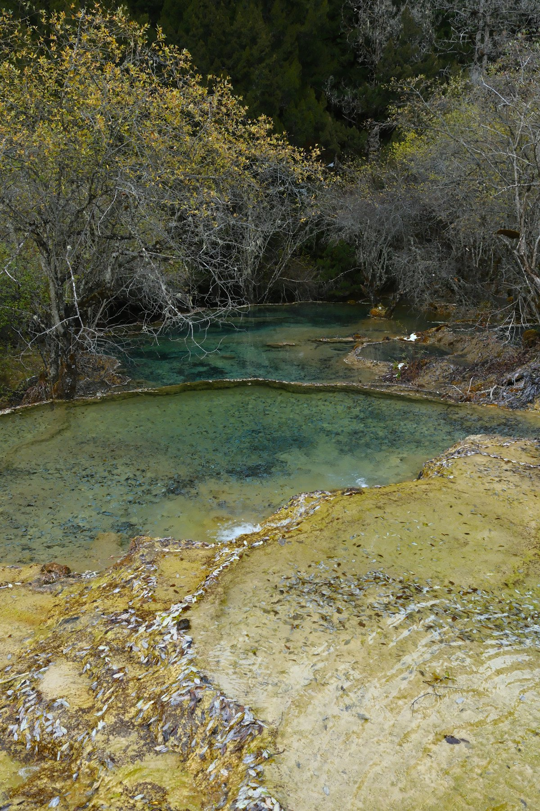
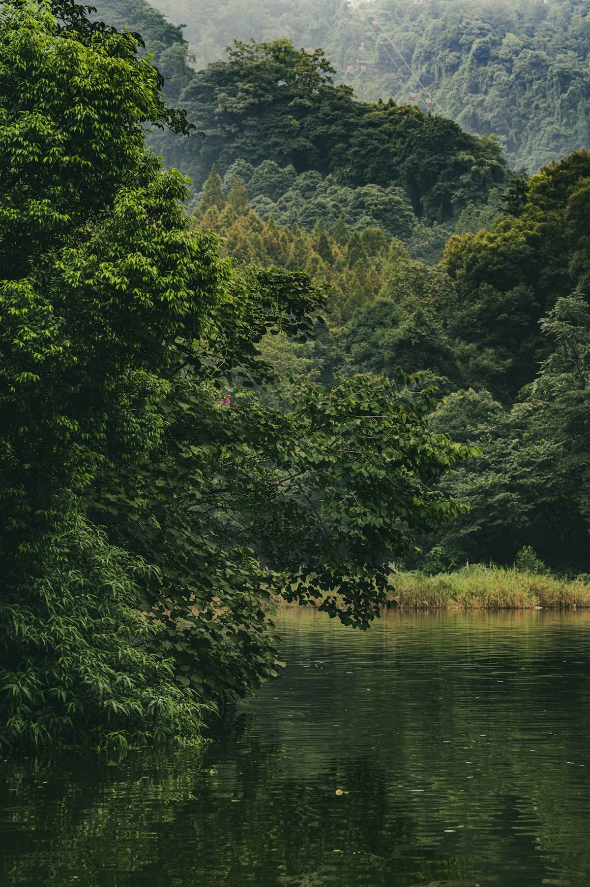
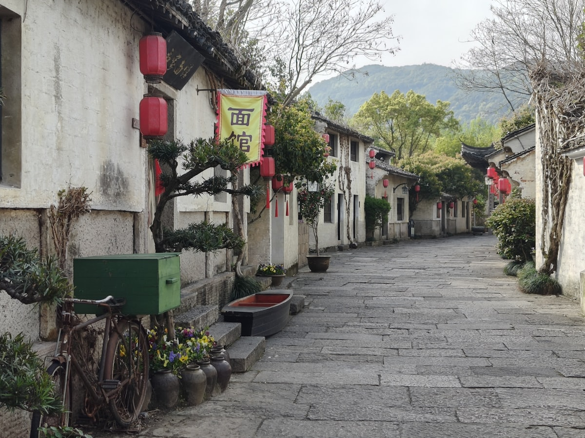

| 事项 | 结论 |
|---|---|
| 事项 | 结论 |
| 推荐方案 | 10 天 9 晚（成都 3 晚 + 峨眉乐山 2 晚 + 九寨沟 3 晚 + 返程） |
| 返程约束 | 第 10 天下午/晚间返程 |
| 行程链 | 成都 → 都江堰 → 峨眉 → 乐山 → 九寨沟 → 黄龙 → 返程 |
| 预算（人均） | 经济 3800–4800 ／ 标准 6000–7800 ／ 舒适 9500–12500 |
| 三件提前事 | ① 九寨沟门票限量需提前 3–7 天抢 ② 峨眉金顶索道/缆车排队长 ③ 熊猫基地早 7:30 开门就冲 |
| 季节提醒 | 九寨 10 月中–11 月秋色最盛；峨眉夏季凉爽避暑，冬季看雪 |
| 交通卡 | 成都地铁全线扫码；九寨建议机场+景区直通车 |
以下为 10 天 9 晚的推荐节奏。九寨、峨眉都需整天，城市与山水穿插安排。
| 日期 | 行程 | 过夜地 | 主题 |
|---|---|---|---|
| D1 抵蓉 | 入住春熙路，傍晚宽窄巷子 + 人民公园 | 成都市区 | 抵达 + 烟火预热 |
| D2 | 大熊猫基地（早）→ 武侯祠/锦里 → 玉林路 | 成都市区 | 熊猫 + 市井 |
| D3 | 都江堰 → 青城山（可选）→ 回城 | 成都市区 | 千年水利 |
| D4 | 高铁到峨眉山 → 报国寺 → 宿山脚 | 峨眉山脚 | 进山准备 |
| D5 | 峨眉山金顶（索道上）→ 下山 → 宿乐山 | 乐山 | 金顶佛光 |
| D6 | 乐山大佛 → 高铁回成都 → 春熙路/太古里 | 成都市区 | 弥勒巨佛 |
| D7 | 成都✈黄龙机场 → 黄龙 → 宿九寨沟口 | 九寨沟口 | 飞赴仙境 |
| D8 | 九寨沟全天（日则+则查洼+树正三沟） | 九寨沟口 | 人间瑶池 |
| D9 | 沟口返程 → 成都市区自由活动 | 成都市区 | 休整收尾 |
| D10 返程 | 上午采购伴手礼，下午返程 | — | 收尾 |
以下为 10 天全程的逐小时执行时间线，可当作「当天打开照着走」的清单。标注 ※ 的可选项视体力与天气取舍。
| 时间 | 事项 |
|---|---|
| 14:00–17:00 | 抵达成都（双流/天府机场，高铁到成都东/南），地铁进城入住春熙路 |
| 17:30–18:30 | 办理入住（推荐春熙路/太古里周边，近 2/3 号线） |
| 19:00–21:00 | 宽窄巷子（免费）：青砖老巷，尝三大炮、糖油果子，晚 9 点后人少 |
| 21:00 | 回酒店休息，早点调整状态 |
| 时间 | 事项 |
|---|---|
| 07:30–11:30 | 成都大熊猫繁育研究基地（参考价 55 元）：早 7:30 开门，熊猫最活跃时段，月亮产房必看 |
| 11:30–13:00 | 午餐：熊猫基地附近或回市区 |
| 14:00–16:30 | 武侯祠（参考价 50 元）+ 锦里（免费）：三国文化 + 古街小吃 |
| 17:00–18:30 | 玉林路（免费）：「成都」歌词里的市井烟火，串串/小酒馆 |
| 19:00 | 晚餐：火锅或串串香 |
| 时间 | 事项 |
|---|---|
| 08:00 | 地铁 2 号线→犀浦，高铁到都江堰（约 30 分钟） |
| 09:30–13:00 | 都江堰（参考价 80 元）：鱼嘴、飞沙堰、宝瓶口，两千年不衰的水利奇迹 |
| 13:00–14:00 | 午餐：都江堰城区 |
| 14:30–17:30 | ※ 青城山（前山 80 元，可选）：道教名山，幽深古道 |
| 18:30 | 高铁回成都，晚餐 |
| 时间 | 事项 |
|---|---|
| 09:00 | 成都东→峨眉山站（高铁约 1 小时） |
| 11:00–13:00 | 报国寺（参考价 8 元）+ 峨眉山山门片区 |
| 13:30–17:00 | 山下「峨眉山博物馆」/伏虎寺，或清音阁一带栈道慢游 |
| 18:00 | 晚餐：峨眉豆腐脑、跷脚牛肉，宿山脚（报国寺片区） |
| 时间 | 事项 |
|---|---|
| 07:00 | 景区观光车（报国寺→雷洞坪，约 2 小时） |
| 09:00–13:00 | 雷洞坪步行至接引殿，金顶索道（往返参考价 120 元）上金顶：十方普贤像、云海、佛光（看缘分） |
| 13:00–14:00 | 金顶素斋简餐 |
| 14:30–17:00 | 索道下山，观光车返回山脚 |
| 17:30 | 乘车赴乐山（约 1.5 小时），宿乐山 |
| 时间 | 事项 |
|---|---|
| 08:30–12:00 | 乐山大佛（参考价 80 元）：九曲栈道下到佛脚，看「山是一尊佛」 |
| 12:00–13:00 | 午餐：乐山钵钵鸡、甜皮鸭 |
| 14:00 | 高铁乐山→成都东（约 1 小时） |
| 15:30–18:30 | 春熙路 + 太古里：逛街、看裸眼 3D 屏、IFS 熊猫爬墙 |
| 19:00 | 晚餐 |
| 时间 | 事项 |
|---|---|
| 09:00–11:00 | 成都双流/天府机场 ✈ 黄龙机场（约 1 小时） |
| 12:30–16:30 | 黄龙（参考价 170 元+索道）：五彩池、钙华滩流，世界自然遗产 |
| 17:00 | 包车/大巴赴九寨沟沟口（约 2 小时），入住沟口酒店 |
| 19:00 | 晚餐：沟口藏羌风味 |
| 时间 | 事项 |
|---|---|
| 07:30 | 沟口入园（门票+观光车参考价 280 元，需提前抢票） |
| 08:00–13:00 | 日则沟：五花海、珍珠滩、箭竹海（九寨精华） |
| 13:00–14:00 | 诺日朗中心站午餐（自热饭/盒饭） |
| 14:30–17:00 | 则查洼沟（长海、五彩池）+ 树正沟（诺日朗瀑布、树正群海） |
| 18:00 | 出沟，晚餐 |
| 时间 | 事项 |
|---|---|
| 09:00–11:00 | 睡到自然醒，沟口买牦牛肉干等特产 |
| 11:30–14:00 | 午餐后返程（黄龙机场飞成都，约 1 小时） |
| 15:30–18:00 | 成都市区自由活动：人民公园鹤鸣茶社喝盖碗茶，或四川博物院 |
| 19:00 | 晚餐：火锅收官 |
| 时间 | 事项 |
|---|---|
| 08:30–11:30 | 采购伴手礼：郫县豆瓣、张飞牛肉、川茶、火锅底料 |
| 11:30–12:30 | 午餐 |
| 13:00–16:00 | 退房，赴机场/高铁站返程 |
| 16:30 | 抵达出发地，结束四川 10 天行程；豆瓣酱等注意密封 |
必去（必去）/ 顺路（顺路）/ 可跳过（可跳过）。

必去
必去
必去
顺路
顺路
顺路
可跳过图片为 Unsplash 主题图（九寨沟、峨眉、乐山等为四川实景），用于页面配图。更多免费景点：人民公园、东郊记忆、四川博物院、锦里。
点击左侧节点可在地图上定位；点击地图 marker 会高亮对应节点。坐标为 WGS-84 转 GCJ-02 纠偏后标注。
以下为单人、不含购物的估算；门票为参考价，以现场为准。九寨沟旺季门票+观光车约 280 元，黄龙约 170 元。交通含成都往返与省内段（成都—九寨往返机票约 1000–2000 元）。
| 项目 | 经济（3800–4800） | 标准（6000–7800） | 舒适（9500–12500） |
|---|---|---|---|
| 往返交通 | 高铁约 800–1200 | 高铁/飞机约 1200–2000 | 飞机+接送约 2500–3500 |
| 省内段 | 成都—九寨约 800–1200 | 机票+直通车 1500–2200 | 包车/商务舱 3000–4000 |
| 住宿（9 晚） | 青旅/快捷 900–1300 | 连锁酒店 2000–2800 | 星级+沟口景观 4500–6000 |
| 门票 | 基础景点约 500 | 含索道等约 750 | 全含约 1000+ |
| 餐饮（10 天） | 650–850 | 1300–1700 | 2200–3000 |
若只为亚丁而来，可直接飞稻城机场，亚丁村 2 晚（门票 266 元），配香格里拉镇住宿；海拔 4000+ 需备好高反药。
成雅高速→新都桥→稻城亚丁的川西环线更适合自驾，7–9 天走完，但山路多、冬季封路，老司机专属。
| 方式 | 时长 | 参考价 | 备注 |
|---|---|---|---|
| 高铁（推荐） | 视出发地 2–10h | 二等座 200–1200 元 | 成都东/南/西站，网络发达 |
| 飞机 | 视出发地 1–3h | 400–2000 元 | 双流近市区，天府机场需地铁 1h |
| 自驾 | 视出发地 | 高速+油费 | 川西、九寨段山路多，冬季谨慎 |
| 区域 | 价格/晚 | 优点 | 短板 |
|---|---|---|---|
| 春熙路/太古里 | 快捷 300–500 / 星级 700–1500 | 商圈核心，地铁 2/3 号线 | 游客多，旺季贵 |
| 宽窄巷子/人民公园 | 民宿 350–600 | 老成都生活气息 | 老房隔音一般 |
| 九寨沟口 | 客栈 300–600 | 近景区大门，次日早入园 | 旺季房紧，提前订 |
| 峨眉山脚（报国寺） | 客栈 200–450 | 近观光车站，性价比高 | 非看日出可选 |